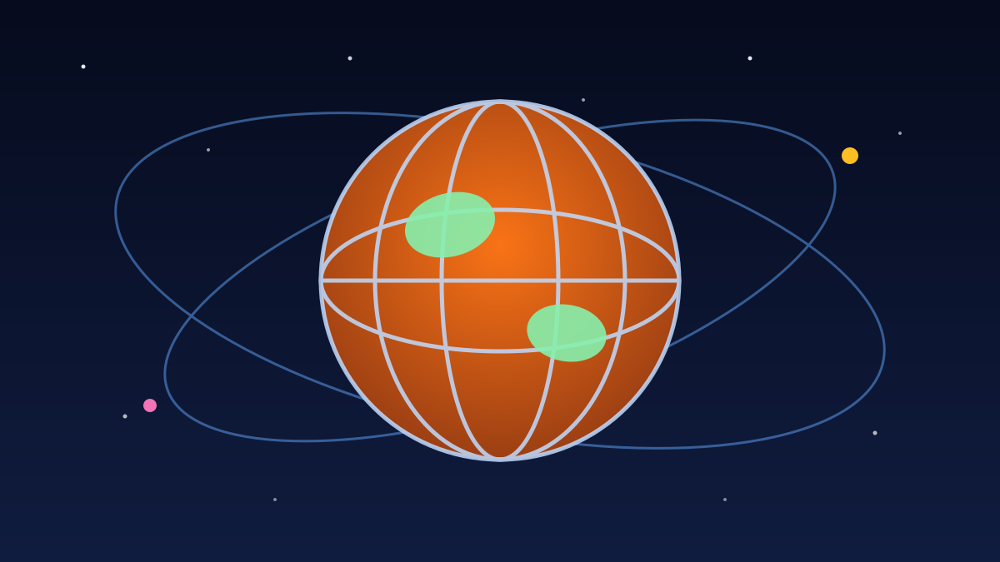

1 / 6

🌍 DUNIA
Langit Italia Kacau Sehari Penuh
Kru easyJet mogok 24 jam, ratusan penerbangan batal, dan besok giliran Prancis. Geser buat spill lengkapnya →
2 / 6
✈️
Mogoknya Kru easyJet Italia
Kru kabin easyJet yang berbasis di Italia mogok nasional selama 24 jam, dari tengah malam sampai 23.59 waktu setempat pada Jumat, 16 Oktober 2026.
Aksi ini diserukan serikat USB Lavoro Privato dan berujung pada pembatalan sekitar 200 penerbangan easyJet rute Inggris–Roma dan Milan.
3 / 6
🏛️
Bukan Cuma easyJet yang Kena
Petugas keamanan Bandara Marco Polo Venesia juga walkout 24 jam, sementara staf darat bandara Pisa dan Florence di Toskana ikut mogok.
ITA Airways mengonfirmasi 13 penerbangan langsung London–Italia batal, dan maskapai lain seperti Ryanair serta Wizz Air melaporkan gangguan.
4 / 6
🛡️
Nggak Semua Penerbangan Batal
Otoritas penerbangan Italia, ENAC, melindungi penerbangan yang berangkat pukul 07.00–10.00 dan 18.00–21.00, plus sejumlah rute pulau dan antarbenua tertentu.
Penumpang yang penerbangannya batal tetap berhak atas pengembalian dana penuh atau rebooking — dan untuk mogok kru easyJet sendiri, kompensasi EU261 berpotensi bisa diklaim.
5 / 6
🇫🇷
Besok Giliran Prancis Mogok
Pilot dan kru kabin Air France, Transavia France, dan Corsair dijadwalkan mogok lima hari, 17–21 Oktober 2026, tepat di musim libur sekolah Prancis.
Kabar baiknya, mogok pengatur lalu lintas udara Prancis batal di menit akhir — jadi langit Prancis tetap terbuka, tapi jadwal Air France tetap rawan berantakan.
6 / 6
🤔
Efeknya ke lo apa?
Punya rencana liburan atau transit lewat Eropa dalam waktu dekat? Cek status penerbangan di aplikasi maskapai sebelum ke bandara, dan simpan bukti pembatalan kalau mau klaim kompensasi.
Buat yang hobi hunting tiket murah ke Eropa, minggu ini jadi pengingat: harga tiket murah nggak ada artinya kalau jadwalnya ambyar gara-gara mogok.